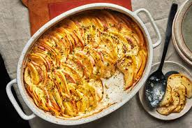

Home
Potatoes Au Gratin

Description
Potatoes au gratin is a creamy, cheesy dish made with thinly sliced potatoes layered with a mixture of grated Gruyère and sharp cheddar cheese. The potatoes are baked until golden and bubbly. The cheese forms a crispy, flavorful crust on top, while the interior is soft and creamy..
Ingredients
- 4 or 5 russet potatoes
- 1 sweet onion
- 8 ounces of White Extra Sharp Cheddar
- 8 ounces of gruyere
- Salt
Steps
- Preheat oven to 350 F
- Grate, or thinly slice the two cheeses
- Using a mandolin (or thinly slicing with a knife), cut the onions and potatoes. The potatoes should be sliced last once everything is ready, as after slicing they will quickly brown.
- In a greased 9x13 Pyrex, layer potatoes, onions, salt then cheese until all ingredients or space is used. Top with one final layer of cheese.